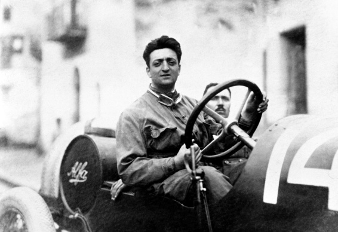

 Enzo Ferrari nasceu em 1898 em Modena na Itália. Seu pai, Alfredo, dirigia uma empresa local de ferreiro de metal que fabricava eixos para as ferrovias italianas. Quando ele tinha 10 anos, seu pai levou a Ferrari e seu irmão Alfredo Jr. para uma corrida de automóveis em Bolonha. Lá viu Vincenzo Lancia batalha Felice Nazzaro no Circuito de Bolonha de 1908. Depois de participar de várias outras corridas, ele decidiu que também queria se tornar um piloto de carros de corrida. A educação formal de Ferrari foi relativamente superficial, algo que ele se arrependeria em seus últimos anos. Em 1916, a tragédia, que assombraria a Ferrari durante toda a sua vida, atingiu sua família com a morte de seu pai e irmão no mesmo ano. Ele passou mulas de sapato da Primeira Guerra Mundial, mas a gripe mundial de 1918 trouxe sua descarga e quase acabou com sua vida. À procura de emprego, ele se candidatou a um emprego na Fiat apenas para ser rejeitado. Ferrari quase morreu de falta de trabalho, algo que seria gravado em sua consciência. Eventualmente, ele conseguiu um emprego na Lancia, naquela época uma pequena montadora envolvida com a conversão de excedente de guerra. Suas tarefas incluíam a condução de testes, o que ele fazia entre entregar o chassi ao construtor de ônibus. Em uma de suas visitas a Milão, ele conheceu Ugo Sivocci, piloto de testes da Costruzioni Mecchanice Nazionali. Suas tarefas incluíam a condução de testes, o que ele fazia entre entregar o chassi ao construtor de ônibus. Em uma de suas visitas a Milão, ele conheceu Ugo Sivocci, piloto de testes da Costruzioni Mecchanice Nazionali. Suas tarefas incluíam a condução de testes, o que ele fazia entre entregar o chassi ao construtor de ônibus. Em uma de suas visitas a Milão, ele conheceu Ugo Sivocci, piloto de testes da Costruzioni Mecchanice Nazionali. Mais tarde, ele se juntou a Sivocci no Targa Florio de 1919. Sua aventura começou antes mesmo de a corrida começar quando, na corrida da Sicília, eles foram perseguidos por um bando de lobos que a Ferrari lutou com seu antigo revólver de serviço. Durante a corrida, era mais uma questão de sobreviver às estradas, vento e chuva do que qualquer esperança de glória. Na última volta, porém, foi um discurso proferido pelo Governador Provincial em uma das pequenas aldeias e um contingente de carabinieri que finalmente bloqueou o seu progresso o suficiente para que eles não pudessem terminar a corrida no tempo previsto. Sivocci e Ferrari tiveram um bom desempenho para receber um emprego na Alfa Romeo, que por sua vez entrou em alguns carros de produção modificados em 1920, na Targa Florio.. A Ferrari dirigindo um desses carros conseguiu terminar em segundo e primeiro na classe. Enquanto na Alfa Romeo, ele foi patrocinado por Giorgio Rimini, que era o assessor de Nicola Romeo. Em 1923 ele estava correndo e ganhando no Circuito de Sivocci em Ravenna quando conheceu o pai do lendário astro italiano da Primeira Guerra Mundial Francesco Baracca. O veterano Baracca ficou encantado com a coragem e a audácia da jovem Ferrari e apresentou ao jovem piloto o emblema do esquadrão de seu filho, que era o famoso Cavalo Empinando em um escudo amarelo. Em 1924, ele marcou sua maior vitória, ganhando o Coppa Acerbo. Depois de um pouco mais de sucesso, ele foi promovido a piloto de fábrica completo. Sua carreira de corrida até então consistia principalmente de corridas locais em carros de segunda mão, mas agora ele era esperado para competir dirigindo os carros mais recentes na corrida mais prestigiada do Grande Prêmio da França. O que aconteceu depois não está muito claro, mas parece que a Ferrari sofreu uma crise de confiança e não pôde participar da maior corrida de sua carreira. Um homem menor pode ter ficado permanentemente assustado com isso, mas a Ferrari conseguiu retomar sua posição na Alfa Romeo, tornando-se "Mr. Fixit" da Rimini. Ele não correu novamente até 1927, mas sua carreira de piloto estava praticamente acabada antes de realmente começar. Reconhecer os limites deste esporte mais perigoso não deve ser minimizado. Ele continuou a competir em eventos menores e nisso ele teve bastante sucesso. A Ferrari nesta época era casada e possuía uma distribuição da Alfa em Modena.Em 1929, a Ferrari fundou sua própria firma, a Scuderia Ferrari. Ele foi patrocinado neste empreendimento pelos irmãos Caniano, de Ferrara, Augusto e Alfredo, herdeiros de uma fortuna têxtil. A Alfa Romeo havia se retirado temporariamente das corridas em 1925 e a principal tarefa da Scuderia era ajudar seus clientes ricos da Alfa Romeo em seus esforços de corrida, fornecendo entrega, suporte mecânico e quaisquer outros serviços que eles exigissem. Com a Alfa Romeo, ele trocou uma garantia de assistência técnica com ações de sua empresa. A Ferrari fez acordos semelhantes com a Bosch, a Pirelli e a Shell. Para complementar seu "estável" de pilotos amadores, ele induziu Giuseppe Campari a se juntar à sua equipe. Ele seguiu isso com um golpe ainda maior ao assinar Tazio Nuvolari. Em seu primeiro ano, a Scuderia Ferrari pôde contar com 50 motoristas de tempo integral e meio período! A equipe competiu em 22 eventos e marcou 8 vitórias e várias boas colocações. A Scuderia Ferrari causou sensação. Foi a maior equipe já montada por um indivíduo. Nenhum dos motoristas recebeu um salário, mas recebeu uma porcentagem do prêmio em dinheiro ganho. Qualquer assistência técnica ou administrativa extra exigida de um motorista era dada de bom grado por um preço. O plano básico exigia que o motorista chegasse à corrida e seu carro fosse entregue na pista, e quaisquer taxas de entrada ou tarefas eram pagas pela Scuderia. Não é de surpreender que a Ferrari voltasse a gostar desse período.A Alfa Romeo continuaria a apoiar a Scuderia como cliente ou como o departamento oficial de corridas da fábrica. Mas logo tudo mudaria quando a Alfa Rome anunciasse outra retirada; das corridas a partir da temporada de 1933 devido a problemas financeiros. No começo, isso parecia ser apenas a abertura que a Ferrari precisava, mas depois percebeu-se que seu próprio suprimento de novos carros de corrida logo secaria. Felizmente para a Scuderia, a Pirelli intercedeu e convenceu a Alfa a fornecer à Ferrari seis P3's e os serviços do engenheiro Luigi Bazzi e do piloto de testes Attilio Marinoni. A Scuderia estaria agora em vigor no departamento de corridas da Alfa Romeo. Em 1932, seu primeiro filho também nomeou Alfredo depois que seu pai, conhecido como Dino nasceu, e a Ferrari aproveitou a oportunidade para se retirar da direção. Uma virada mais profissional também foi tomada pela equipe. Isso aborreceu Alfredo Caniato e ele foi comprado pelo conde Carlo Felice Trossi, que era um motorista de meio período, além de um milionário em tempo integral. Tudo parecia pronto para a Ferrari fazer sua verdadeira marca na cena das corridas. O que ele não contava era um maremoto alemão na forma de Auto Union e Mercedes. Em 1935, a Ferrari assinou o piloto francês Rene Dreyfus, que mais recentemente dirigiu para a Bugatti. Ele ficou impressionado com a diferença entre sua antiga equipe e a Ferrari. O que ele não contava era um maremoto alemão na forma de Auto Union e Mercedes. Em 1935, a Ferrari assinou o piloto francês Rene Dreyfus, que mais recentemente dirigiu para a Bugatti. Ele ficou impressionado com a diferença entre sua antiga equipe e a Ferrari. O que ele não contava era um maremoto alemão na forma de Auto Union e Mercedes. Em 1935, a Ferrari assinou o piloto francês Rene Dreyfus, que mais recentemente dirigiu para a Bugatti. Ele ficou impressionado com a diferença entre sua antiga equipe e a Ferrari.Ao longo dos anos, a Scuderia Ferrari empregaria grandes pilotos como Giuseppe Campari, Louis Chiron, Achille Varzi e o maior deles, Tazio Nuvolari . Exceto pela grande vitória de Nuvolari no Grande Prêmio da Alemanha de 1935, as vitórias em qualquer uma das principais corridas foram poucas e distantes entre si. Durante esses anos, sua equipe enfrentou o poder alemão da Auto Union e da Mercedes. Em uma ocasião, a Ferrari teve a oportunidade de passar o grande Nuvolari. Nos testes no circuito das "Três Províncias", quando ele perguntou ao seu companheiro (a Ferrari também estava dirigindo lá com um carro mais potente do que o de Mantuan) para levá-lo com ele. Deve-se acrescentar que Nuvolari não conhecia esse circuito. " Na primeira curva ", escreve Ferrari,Tive a nítida sensação de que Tazio a levara mal e que iríamos acabar na vala; Eu me senti enrijecer enquanto esperava pela crise. Em vez disso, nos encontramos na reta seguinte com o carro em uma posição perfeita. Em 1937, a Ferrari sugeriu à Alfa que eles construíssem carros de classe de 1,5 litros, mas o que ele conseguiu foi a decisão da Alfa Romeo de trazer a corrida de volta para casa. Depois de ser o homem encarregado da Scuderia, ele se encontrou, o novo Direttore Sportivo, trabalhando sob o comando do diretor de engenharia da Alfa, Wilfredo Ricart. Esta era uma situação que ele não conseguia tolerar e logo decidiu desistir. Como parte de seu contrato de indenização, ele não poderia competir contra seus ex-chefes por quatro anos. A Ferrari iniciou uma nova empresa chamada Auto-Avio Costruzioni SpA, que produzia peças de máquinas para vários clientes. Para a Mille Miglia 1940, Ferrari entrou em dois pequenos carros esportivos para serem dirigidos por Alberto Ascari e Lothario Rangoni. Eles foram rotulados como AAC 815, mas na verdade foram os primeiros carros de corrida da Ferrari. Depois da guerra, a Ferrari começou a criar seu próprio carro do Grand Prix e, em 1947, um Type125 de 1,5 litros entrou no Grand Prix of Monaco. O carro foi projetado por seu antigo colaborador Gioacchino Colombo. A primeira vitória da Ferrari no Grand Prix aconteceu em 1951, no GP da Inglaterra, nas mãos do argentino Froilan Gonzalez. A equipe teve a chance de um campeonato mundial se evaporar no Grande Prêmio da Espanha. Antes da corrida mais importante na história da jovem equipe, a Ferrari decidiu experimentar novos pneus Pirelli. O resultado foi jogado passos, o que permitiu Fangio para ganhar a corrida e seu primeiro título.Em 1948 Nuvolari já com problemas de saúde estava programado para dirigir uma Cisitalia, mas o carro não estava pronto a tempo. A Ferrari deu a ele um carro destinado ao conde Igor Troubetzkoy, um Ferrari 166C aberto. Nuvolari percebendo que seu corpo estava falhando o levou como se o próprio diabo estivesse em perseguição. No momento em que o campo chegou a Ravenna, Nuvolari já estava na liderança. Apesar de perder o pára-lama e depois o capô do motor, nada conseguiu deter o " Flying Mantuan"". No momento em que ele chegou a Florença, ele estava mais do que uma hora à frente do piloto principal da Ferrari. O assento tinha vindo do seu carro para ser substituído por um saco de laranjas e ele continuou dirigindo cada vez mais rápido. A multidão começou a temer que o "Grande Pequeno Homem", sabendo que o tempo estava acabando, estava determinado a morrer atrás do volante. Ferrari em uma das últimas paradas de controle viu o estado de seu motorista e com lágrimas nos olhos implorou a seu amigo Pois embora tivessem, em vários momentos, ficado na garganta um do outro, cada um compreendeu o outro, Nuvolari foi o último piloto que poderia olhar a Ferrari nos olhos como um igual.Finalmente, em Reggio Emilia, o que nenhum concorrente poderia realizar, Nuvolari espancado por uma mola quebrada.Exausto, ele teve que ser carregado do carro.Durante as temporadas de 1952-53 houve uma escassez de carros de Fórmula 1 para que o Campeonato Mundial fosse montado para carros de Fórmula 2. O Ferrari Tipo 500 dominaria os campeonatos ambos os anos. Nas mãos do bicampeão mundial Alberto Ascari Ferrari venceria 9 corridas. Para 1954, Ascari deixou a Ferrari e se juntou à Lancia, onde dirigia uma das D50s projetadas por Jano. As esperanças de Lancia por um título foram frustradas primeiro quando o carro chegou atrasado e fatalmente quando Ascari morreu testando um carro esportivo da Ferrari. A Lancia foi forçada a se retirar e a Fiat, sua matriz, entregou todos os carros da Lancia para a Ferrari, incluindo também o designer Vittorio Jano! O próximo desafio da Ferrari veio das novas equipes britânicas. Guy Vandervell forneceu à Ferrari os rolamentos especiais ThinWall que foram usados em todos os seus motores. Vandervell fazia parte do grupo BRM, mas desistiu em desgosto. Depois de comprar e competir com um par de Ferrari's, ele construiu seus próprios carros que acabaram vencendo os carros italianos. Foi apenas vencendo os Vanwalls, como os carros foram nomeados foi Ferrari capaz de subir de volta no topo. Mas isso foi apenas o começo da invasão britânica. Esses fabricantes não produziram seus próprios motores, mas concentraram-se no design do chassi e na aerodinâmica, áreas de fraqueza tradicional da Ferrari. Durante este período a Ferrari começou a produzir seu famoso carro Gran Turismo em conjunto com Battista "Pinin" Farina.Em 1969, a Ferrari enfrentou severas dificuldades financeiras. Seus carros ainda eram muito procurados, mas não conseguiam produzir o suficiente para atender à demanda e manter seu programa de corrida. Para salvá-los, vieram a Fiat e a família Agnelli. Ferrari ainda era o homem no comando, mas um novo pagador estava a bordo. Foi contra esse pano de fundo do império manufatureiro e aeroespacial da Fiat que a Ferrari foi criticada por não dominar seus rivais britânicos menores, mas outro gênio, Colin Chapman, estava em seu auge.